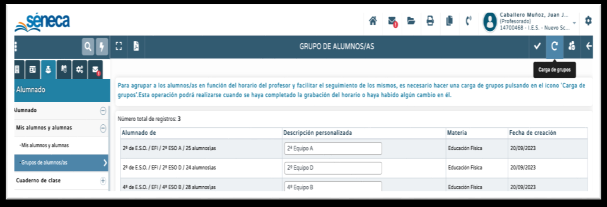
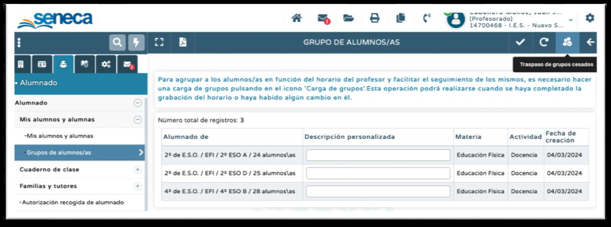
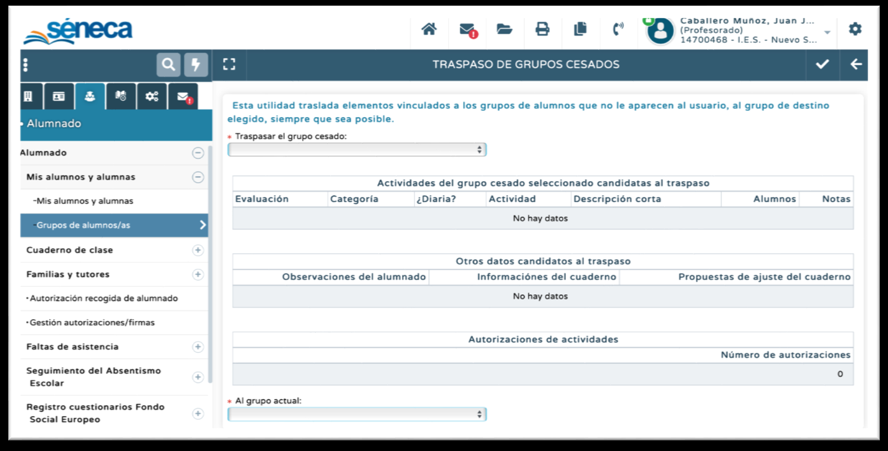

Carga de grupos
Una vez grabado correctamente el horario, el profesor/a debe proceder a la carga de grupos. Con perfil Profesorado (no se necesitan permisos especiales) ir a la ruta Alumnado-Alumnado-Mis alumnos y mis alumnas-Grupos de Alumnos/as. En esta pantalla pinchad arriba a la derecha en Carga de grupos.

Esta acción cargará los grupos según estén grabados en el horario, teniendo la posibilidad seleccionar un nombre con el que queremos que nos aparezcan en el Cuaderno (apartado Descripción Personalizada). Una nueva carga de grupos tendremos que realizarla siempre que haya una modificación del horario o del alumnado asignado a cada grupo.IMPORTANTE: Si una nueva carga de grupos provoca la desaparición de datos (actividades evaluables, observaciones compartidas,…) podemos proceder a hacer una recuperación de los mismos pinchando en Traspaso de Grupos Cesados, arriba a la derecha en la misma pantalla. (Vídeo de apoyo)


SUGERENCIAS DE CONFIGURACIÓN
Hay que prestar atención a la grabación de los horarios (las materias que se seleccionan son las correctas, la asignación del alumnado también,…). Muchos de los problemas que en el futuro nos pueden surgir en el uso del Cuaderno procederán de una grabación incorrecta del horario y, por tanto, de una carga errónea de grupos. Además, tenemos que tener en cuenta que una modificación del horario puede provocar una desaparición de los datos del Cuaderno. (Vídeo de apoyo: cómo grabar horario en grupos mixtos, colegios rurales,…)